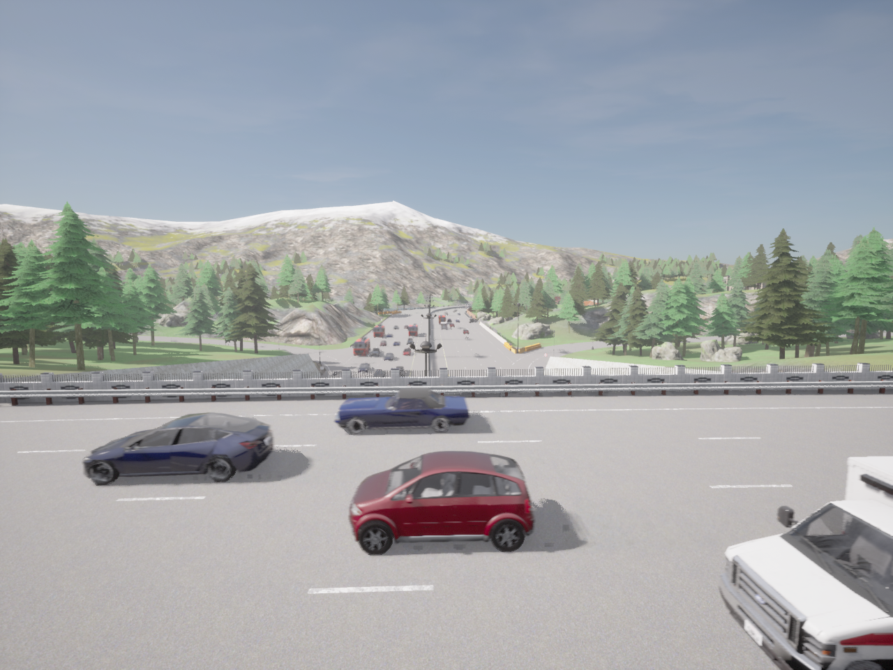

Data Collection
- Our sensor suite comprises an array of strategically positioned sensors of DVS cameras complemented by, RGB, depth, optical flow, semantic, instance sensors, GNSS and IMU.


- We leverage CARLA simulator's robust data generation pipeline to record traffic data across diverse scenes, illumination, weather conditions, and varying traffic densities. Data sequences are generated under discrete environmental weather conditions, with continuously shifting conditions for enhanced realism.
- SEVD comprises extensive annotations, including:
- 2D and 3D bounding boxes for six categories:
- Car
- Truck
- Bus
- Bicycle
- Motorcycle
- Pedestrian
- Totaling approximately 9 million bounding boxes.
- Custom data generation code is provided at https://github.com/eventbasedvision/SEVD.




SEVD has scenes ranging from Urban, Suburban, Roundabout, Intersections, Highways, Underpass/overpass, Rural.